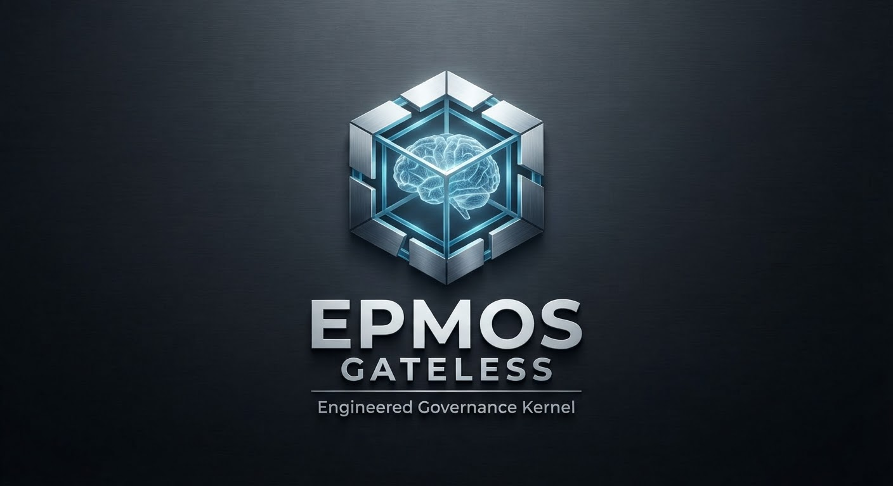

Business plans, strategy, CEO-level decision support, COO operations, CFO/finance support, revenue planning, technology strategy, and coordinated executive guidance.

COMMANDER · FULL-SERVICE BUSINESS · AI · GROWTH · GOVERNANCE · QUALIFICATION
Build the capability.
Govern the authority.
EPMOS is a full-service business and AI partner. Commander is our flagship authority-governance program, built for the harder question that arrives when capable people, machines, agents, roles, and systems begin interacting: who is actually authorized to do what, under which current conditions? Around that flagship, EPMOS helps organizations plan, build, sell, market, create websites, produce media, automate, integrate AI, develop custom intelligent systems, test them under pressure, qualify bounded behavior, and operate with stronger governance.
International engagements welcome. Public overview only. Protected architecture, formulas, credentials, exploit-enabling test internals, and Founder-locked material are not disclosed here.
AN OPEN INVITATION TO DISCOVER COMMANDER
If you work with AI, autonomy, mission systems, interacting agents, delegated authority, or high-consequence operations, Commander is worth understanding.
Commander begins with a simple principle: capability is not authority. Communication is not delegation. Collaboration is not permission. We invite defense organizations, enterprises, technology companies, researchers, public institutions, universities, operators, builders, and anyone thinking seriously about consequential AI to explore the program, watch the Commander backstory, review the public evidence posture, and understand the authority problem Commander was built to address.
EPMOS FLAGSHIP · COMMANDER
Capability can collaborate. Authority does not become contagious.
IDENTITY → STATE → QUALIFICATION → SCOPE → AUTHORITY → ACTION
Commander is the EPMOS defense authority-governance system-of-systems designed to keep authority bounded across interacting command roles, machines, missions, configurations, delegations, and changing evidence states. When a mandatory condition fails or becomes unresolved, the intended governance result is HOLD / RETURN / ESCALATE rather than silent continuation.
The preserved Commander laboratory program uses a directed authority matrix across the command roles and source-to-target lanes. Two separate full-system qualification records preserve the laboratory scenarios across the two runs.
Commander evidence posture
Two separate full-system runs, preserved as distinct records across the directed authority matrix.
FULL-SERVICE MEANS FULL-SERVICE
One partner across strategy, people, systems, technology, creative production, and execution.
EPMOS can advise the business, build the operating capability behind the advice, create the public-facing assets, and stay involved as the company grows. Our scope extends far beyond AI governance alone.
Sales structure, prospect research, targeting, scripts, qualification, outreach, objection handling, pipeline design, follow-up systems, training, proposal support, CRM structure, and AI-assisted sales support.
Brand positioning, campaign strategy, social-media content, email campaigns, content calendars, lead generation, SEO/SEM strategy, launch campaigns, multilingual localization, and ongoing marketing execution.
Visual, editorial, video/audio, campaign creative, presentation materials, sales-enablement production, multimedia assets, publishing packages, and coordinated creative execution.
Full business website design and development, landing pages, campaign pages, customer journeys, conversion flows, lead capture, digital assets, website strategy, AI-enabled web experiences, and scoped launch/support.
Business-model review, growth strategy, market-entry planning, revenue-channel design, offer and pricing architecture, competitive positioning, customer segmentation, operating plans, and process improvement.
AI opportunity mapping, integration into existing workflows, internal assistants, executive tools, customer-support systems, sales and marketing AI, and business automation.
Purpose-built companions, agents, executive systems, operations assistants, coding/IT tools, sales and marketing agents, and other defined intelligent systems.
High-assurance authority-governance work for interacting roles and systems, with identity, state, scope, delegation, evidence freshness, revocation, rejoin, audit, and qualification treated as explicit control questions.
Workflow design, process mapping, dashboards, SOPs, routing, repetitive-task automation, operating systems, and execution support.
Adversarial testing across authority, identity, provenance, delegation, tool use, revocation, recovery, seam behavior, and other governed failure conditions.
Bounded qualification, frozen propositions, defined falsifiers, failure preservation, exact retesting, evidence packages, independent reproduction support, and standing limited to what the evidence earns.
Localized market entry, multilingual campaigns and outreach, distributed-team support, cross-border operating strategy, and market-specific delivery planning.
One service, a bundled package, or an ongoing engagement combining Strategy + Sales + Marketing + Studio + Websites + AI + Automation + Governance according to mission, market, language, budget, and delivery window.
EPMOS QUALIFICATION DEPARTMENT
External AI qualification is a professional engagement—not a free review and not a purchased PASS.
DEFINE → FREEZE → ATTACK → PRESERVE → RETEST → QUALIFY
Our Qualification Department conducts bounded adversarial qualification for AI agents, model-enabled workflows, and governed intelligent systems. We freeze the proposition and implementation, define falsifiers, attack the boundary, preserve failures and provenance, and issue only the standing the evidence earns.
EPMOS is also actively developing a formal Qualification Certificate Program designed to bind any future certificate to the exact proposition, frozen implementation, conditions, consequence boundary, provenance record, and examination date. Until that program is formally released, EPMOS issues scoped qualification findings and evidence packages.
Commercial qualification boundary
- Public authority screen
- FREE
- Formal qualification
- PAID
- Guaranteed PASS
- NEVER SOLD
- Failure preservation
- REQUIRED
- Independent adjudication
- SUPPORTED
- Certificate program
- IN DEVELOPMENT
INTERNATIONAL BY DESIGN
EPMOS is not limited to one city, one state, or one country.
UNITED STATES • CANADA • CARIBBEAN • AFRICA • GLOBAL ENGAGEMENTS
We work with organizations that need remote strategy, digital execution, website creation, creative production, AI integration, governance, testing, marketing, sales infrastructure, and operating support across borders. Our delivery model is designed for distributed teams, international partners, and organizations entering new markets.
Whether the need is a business plan in Florida, a sales operation in Canada, a digital campaign in the Caribbean, an AI integration project in Africa, a website for a growing company, or a high-assurance authority-governance engagement, EPMOS can organize the work around the mission.
International operating posture
- Remote delivery
- AVAILABLE
- Cross-border engagements
- OPEN
- Distributed teams
- SUPPORTED
- Local-to-global scaling
- IN SCOPE
- Ongoing support
- AVAILABLE
ATMOS LAB · ADVERSARIAL AI AUTHORITY TESTING
Bring us the system. Define the authority. We attack the boundary.
DEFINE → ATTACK → PRESERVE → REPAIR → RETEST → WIDEN
Atmos Lab is the specialized EPMOS testing lane for AI agents, model-enabled workflows. We test authority escapes, identity failures, provenance breaks, unsafe delegation, tool misuse, revocation failure, recovery behavior, and other governed failure conditions before production discovers them for you.
Qualified testing foundation
Adversarial testing across the complete governance family set, with zero tolerance for material escape.
START WITHOUT A SALES CALL
Find your authority exposure in about five minutes.
The public AI Authority Exposure Check screens 18 control questions across explicit authority, identity continuity, evidence, tools, delegation, revocation, provenance, recovery, exact retesting, material change, human scope, composite authority, and independent reproducibility.
A focused screen built around consequential authority, not generic AI readiness.
The public screen calculates the result in your browser and does not ask for secrets or proprietary content.
The result identifies exposure. It does not manufacture a compliance claim or production authorization.
Move from screen to a bounded diagnostic or a deeper adversarial qualification engagement.
EVIDENCE BEFORE AUTHORITY
We preserve the failure. We do not grade it away.
Our testing doctrine is DEFINE → BUILD → VERIFY → ATTACK → PRESERVE FAILURE → REPAIR → RETEST EXACTLY → WIDEN TEST → REPEAT. Tests are not weakened to manufacture a pass.
Failure becomes evidenceRepair retains lineageExact failing condition is rerunOnly then is the test widenedChanged systems can require revalidationPassing never creates self-authority
The qualified testing service does not pre-certify an outside target. Every submitted system receives only the conclusion its own evidence earns.
THE EPMOS OPERATING MODEL
Strategy into capability. Capability under governance.
Human-Governed Business & AI Infrastructure
EPMOS combines business execution with governed intelligent systems: strategy, sales, marketing, Studio production, website creation, operations, digital delivery, AI integration, authority, identity, state, provenance, delegation, lifecycle promotion, rollback, revocation, and controlled advancement.
Operating boundary
- Human authority
- DEFINED
- Authority expansion
- GATED
- Failure preservation
- REQUIRED
- Self-promotion
- PROHIBITED
- Material change
- REVALIDATE
OPEN FOR BUSINESS
Bring us the business problem, the growth target, the website, the creative mission, or the AI system.
We are open to Commander engagements, business planning, C-suite support, sales and marketing buildouts, EPMOS Studio production, full website creation, social campaigns, AI integration, custom companion and agent builds, automation, executive support, adversarial testing, formal qualification, governance engagements, and ongoing operating partnerships in the United States and internationally.
Initial inquiry should not include secrets, credentials, proprietary source code, protected prompts, classified material, or regulated data.
LEARN TO BUILD IT
EPMOS AI Systems Engineer Course — Gateless
Learn AI systems engineering from absolute zero — no prerequisites. Self-paced, no deadlines. Not accredited. No job guarantee. Certificate only for defended work + Founder acceptance.